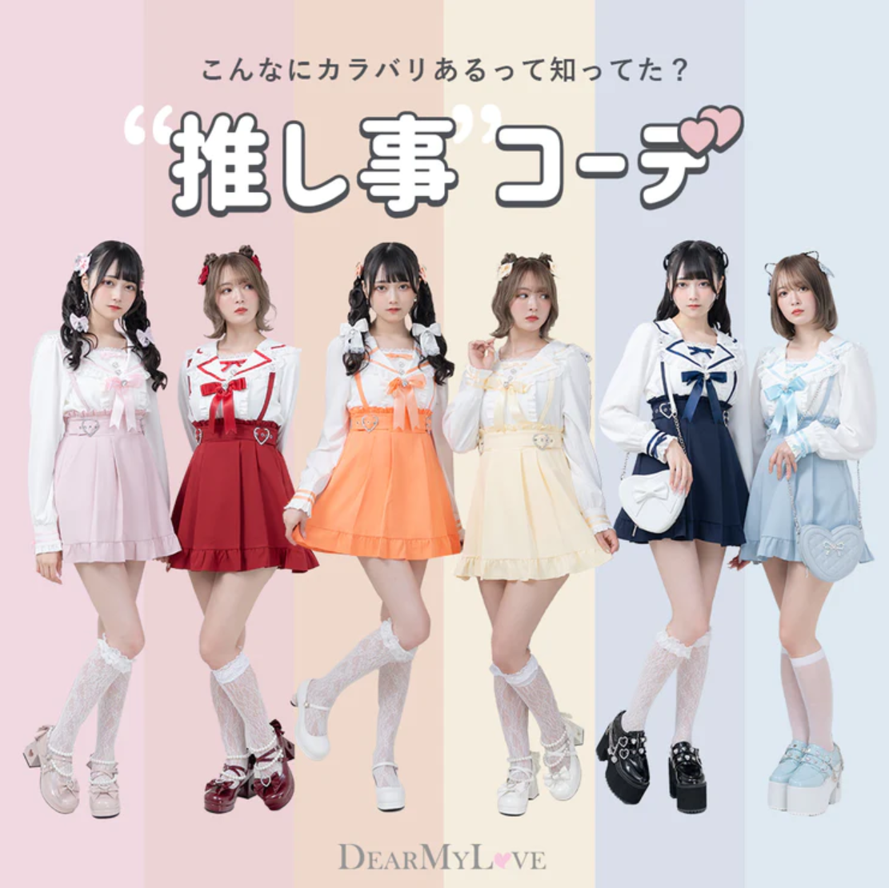

스나계, 양산형, 지뢰계의 차이?
양산형, 지뢰계, 스나계의 차이는 무엇일까?
양산형과 지뢰계는 꽤나 비슷하게 보인다.
이들은 비슷한 양상을 띠지만 근본적인 부분에서 차이가 있다. 그리고 스나계는 이들과는 완전히 다른 스타일을 보이고 있다.
각각의 스타일에 대해서 알아보자!
이것만 읽으면 당신도 양지뢰 마스터!
참고로 주인장은 이 세가지 패션을 전부 사랑한다^^ 그래서 통장이 거지꼴로 변하고 있다.
스나계란?
스나계는 양산형이나 지뢰계처럼 알려지지 않아서 잘 모르는 사람들도 많을 것이다.
스나계는 일본의 SNIDEL(스나이델) 이라는 패션브랜드 스타일을 말한다.
성숙한 성인 페미닌 스타일이다.
이들 중에서도 오타쿠 여성들이 꽤 많다.
실제로 아이돌 콘서트장에 가면 양산형 지뢰계 스타일뿐만 아니라 스나계 스타일의 여성들도 많이 보인다고 한다.
스나계,양산형,지뢰계 모두 명품 소비를 좋아하지만, 그 중에서도 가장 명품을 많이 두르는 스타일이지 싶다.
디올 아이템들을 굉장히 좋아한다.
아무래도 이 패션 자체가 20대중후반~30대가 타겟이기 때문에 스나계 브랜드들 자체도 양지뢰 옷들에 비해서 고가이다.
양산형 패션과 약간 걸쳐 있기도 하다.
하지만 눈에 띄는 스타일은 아닌지라 저렴한 브랜드에서 어째저째 비슷한 스타일의 옷들을 찾아서 매치도 가능하다.
애프터눈티를 즐기는 모습도 자주 보인다.
양산형패션이란?
쟈니즈(일본의 대형엔터테이먼트. 우리나라로 치면 sm정도) 아이돌 팬들이 자신의 오시(推し 최애와 비슷한 뜻) 에게 눈에 띄기 위해서 극단적으로 여성스러운 패션으로 입은 것이 유래이다.
하지만 모든 팬들이 자신의 오시에게 눈에 띄기 위해 그렇게 옷을 입다보니
"마치 양산형으로 찍어낸듯하다." 라고 하여서 양산형 패션이라고 불린다.
쟈니즈 말고도 왕자? 같은 컨셉의 아이돌 팬들에게서도 흔히 볼 수 있다.
흰색, 핑크 등의 화사한 계열의 옷을 주로 입으며 헤어 색상도 갈색 등으로 밝은 색상을 선호한다.
화려하게 세팅된 헤어와 웨이브헤어 스타일 또한 특징이다.

일본의 아이돌은 멤버마다 각자 대표 색상이 있는데 위의 사진처럼 자신의 오시색상을 입고 콘서트에 가는 경우가 많다.
일본 본토에서는 오타쿠패션이라고도 불리운다.


이처럼 자신의 오시 사진이나 인형 등을 가지고 귀여운 카페 등에서 사진을 찍어 sns에 올리는 것이 유행.
오시의 생일에는 호텔을 대여해서 생일파티를 하기도 한다. (물론 오시는 참여안함. 그냥 지네끼리하는거임.)
지뢰계패션이란?
지뢰계 패션의 시초인 지뢰녀부터 알아보자.
지뢰녀는 겉보기에 귀여워서 사귀었지만 막상 사귀고 난 뒤 과한 집착을 부리거나 자해를 하는 등 문제를 일으켜
'지뢰 밟았다' 라는 의미에서 시작 되었다.
처음에는 이런 좋지 않은 의미로 쓰이다가 지뢰녀들의 패션이 귀여워서 주목 받기 시작했고 이로 인해 지뢰녀들의 패션이 하나의 패션으로 자리잡게 되었다.
이들은 주로 검정색 위주의 어두운 계열의 스타일을 즐겨 입으며,
피어싱이나 체인 등으로 좀 펑키한 느낌을 내는 경우도 많다.
아파보이는 듯한 붉은 화장이 특징이다.
이들을 얘기하자면 멘헤라와 토요코키즈를 빼놓을 수 없는데 아래에서 설명하겠다.
양산형과 지뢰계의 차이?
멘헤라와 토요코키즈에 대해 설명하기 전에 잠시 양산형과 지뢰계의 차이를 알아보자!
위의 사진은 양산형과 지뢰계의 차이를 아주 잘 설명해주고있으니 참고바란다.
양산형과 지뢰계 패션의 경계가 사실 좀 모호하다.
정확히 이건 지뢰계고 이게 양산형이다!!!! 라는 것은 없지만 대략적인 느낌을 살펴보자.
육안으로 봤을때 화사하고 부드러운 느낌이 양산형,
어둡고 펑키한 느낌이 지뢰계 라고 보면 될 듯 하다.
사실상 거의 비슷한 스타일이고 사실상 색깔놀이라서.. 합쳐서 양지뢰라고 부른다.
멘헤라란?
멘헤라에 대해서 먼저 알아보자

멘헤라는 'mental health error' 의 줄임말로 굳이 번역하자면 정신 건강 오류 정도가 되겠다..
멘탈이 약하고 애정결핍, 조울증, 우울증 등 정신건강이 피폐한 이들을 이르는 말이다.
이들은 SNS를 통해서 자신이 먹는 정신과 약, 자해 전시 등을 하기도 한다.
(자해 사진은 너무 징그러워서 안 가져옴)
이들은 보통 메비우스퍼플 담배에 핑크 몬스터 음료를 즐겨 마시고 스트롱이라고 하는 도수가 높고 싼 술에 빨대를 꽂고 마시는게 특징이다.
스트롱 주류를 주로 마시는 이유는 돈이 적으니 싼값에 빨리 취하기 위함이다..
광적으로 호스트에 빠져있는 경우도 많으며, 그로 인해 돈이 부족해 파파카츠(원조교제) 등 성매매 행위를 하는 경우도 종종 보인다.
사진에 보이는 것 처럼 길쪽에 일자로 쭉 서 있고 남성이 마음에 드는 여성에게 다가가 금액을 서로 조정하여 불법성매매를 하는 모습이 보인다.
이들이 모두 지뢰계라 할 수는 없지만 지뢰계 패션을 입고 있는 경우가 많다.
보통 멘헤라들이 지뢰계패션을 하고 있는 경우가 대다수다.
토요코키즈와 경의선키즈의 사회적 문제
가부키초의 토호시네마 옆 광장에 모여서 노숙을 하거나 배회하는 가출 소년 소녀들을 토요코키즈라 부른다.
토호시네마의 앞글자 토(トー)와 옆이라는 뜻의 요코(横)를 합쳐서 토요코라고 부른다.
보통 가정폭력 등의 가정불화 문제로 가출한 아이들이 대부분이다.
이들은 트위터나 틱톡에서 멘헤라 등의 키워드로 자신과 비슷한 처지의 친구들을 찾아 서로 소통하며 토요코광장에서 모여서 함께 틱톡을 찍거나 모여서 노는 모습을 볼 수 있다.
이런 정신적으로 불안정한 토요코키즈들에게 접근하는 호스트들이 굉장히 많다.
애정결핍이 심한 아이들이 많다보니 조금만 잘해줘도 금방 넘어가 버리는 경우가 많은 것이다.
호스트에 다녀야하기도하고 가출청소년이 일할 수 있는 곳이 없다보니 성매매로 이어지는 경우가 태반이다.
이들은 광장에서 고기를 구워먹거나 하는 등 민폐행위들이 눈살을 찌푸리게 한다.
돈이 부족하기 때문에 근처 비지니스 호텔을 룸 하나만 예약한 후에 10댓명이 들어가서 씻고 자기도 한다.
보통 지뢰계들이 입는 브랜드의 옷들은 청소년들이 사기에는 조금 부담스러운 가격대이다.
블라우스 한벌에 저럼한건 4500엔 비싼것들은 10000엔이 넘는 것들도 있다.
그래서 여러벌을 사서 입기에는 힘들기 때문에 브랜드 옷을 한벌사고 그걸 세탁하는 동안 바로 근처에 있는 돈키호테에서 파는 저렴한 돈펭티셔츠를 입고 다닌다.
이들이 광장에서 벌이는 민폐행위, 위화감 조성, 청소년 성매매 등으로 일본사회에서 골머리를 앓고있다.
하지만 이제는 더이상 일본에서만의 문제가 아니다.
홍대역 6번출구 앞 경의선 책거리에서 자칭 '멘헤라공원'이라 부르며 토요코키즈들을 따라하는 경의선키즈가 있다.

SNS의 영향이 크다보니 우리나라 학생들도 토요코키즈를 따라하기 시작했다.
마찬가지로 가출청소년들이 모이는 경우가 많고 실제로 불법 성매매를 하기도 한다.
하지만 일본에 비해서는 좀 덜 심각한 듯 하다.
이야기를 마치며...
지뢰계 패션을 소비한다고 해서 모두가 멘헤라이고 문제를 일으키는 것은 아니다.
하지만 안그래도 눈에 띄는 패션인데, 이 패션으로 사회적으로 문제를 일으키는 사람들이 많기 때문에 사람들의 시선이 곱지 못하다.
마치 그저 형광색 바지와 언더아머 티셔츠를 사랑하는 사람일뿐이지만 그렇게 입고나가면 고삐리 일진으로 보는 것 처럼.....
양지뢰패션도 그런 느낌의 패션이 되어버린 것 같아서 굉장히 속상하다.
하지만 양지뢰 패션을 입는사람들 중에서도 건전하고 패션 그 자체만 즐기는 경우도 아주 많기 때문에 너무 따가운 시선으로만 보지 않았으면한다.
모든 양지뢰 공주님들이 공주다운 행동을 하기를~ 힘내자!♡